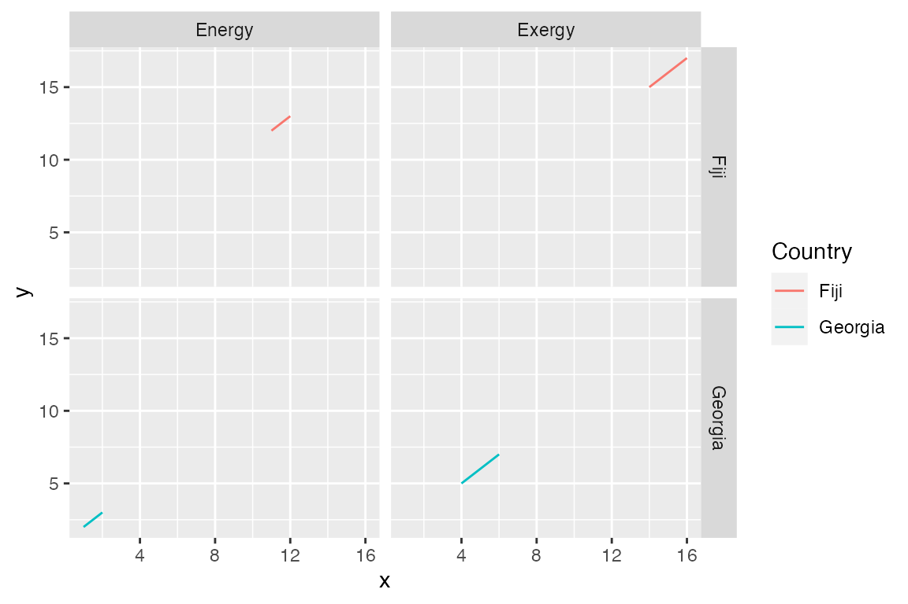
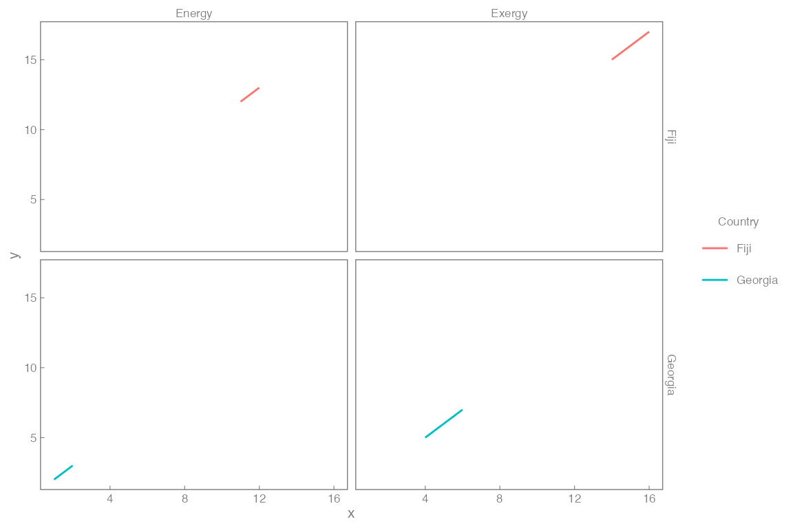
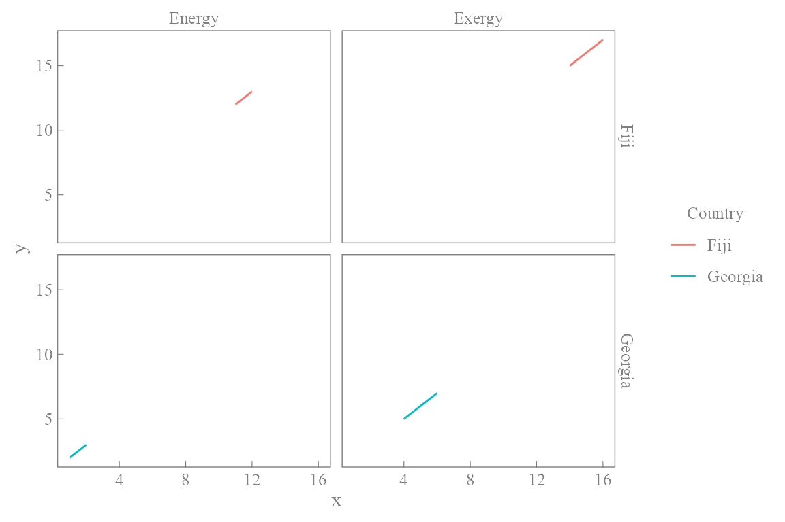
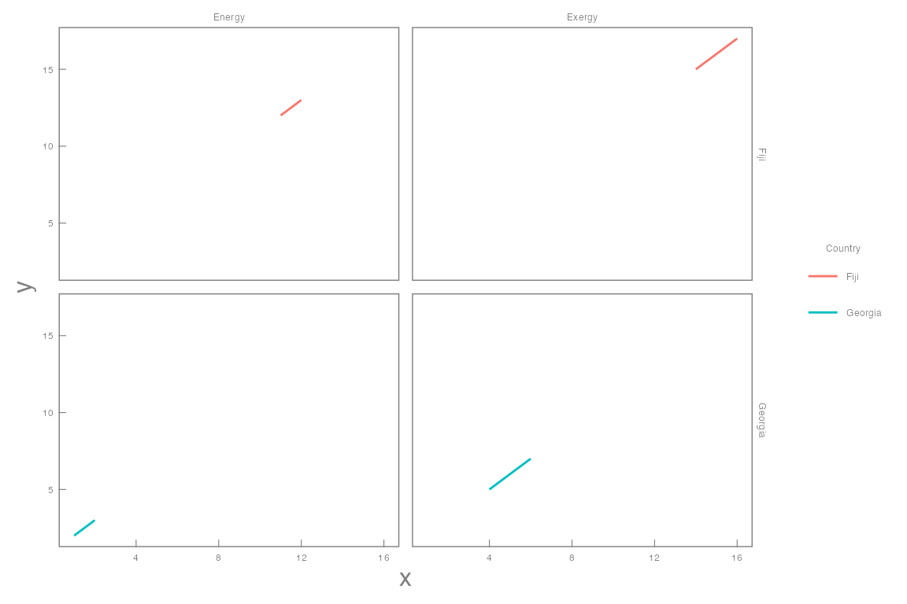
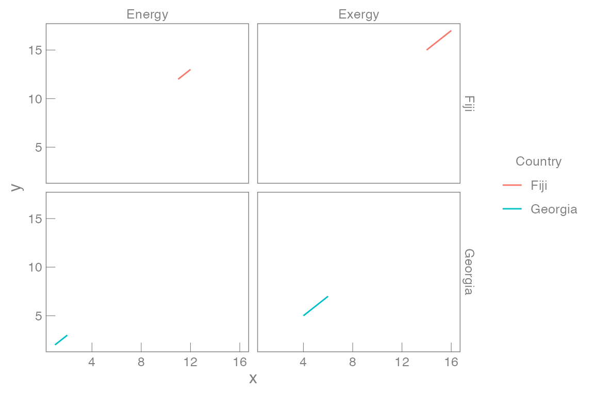
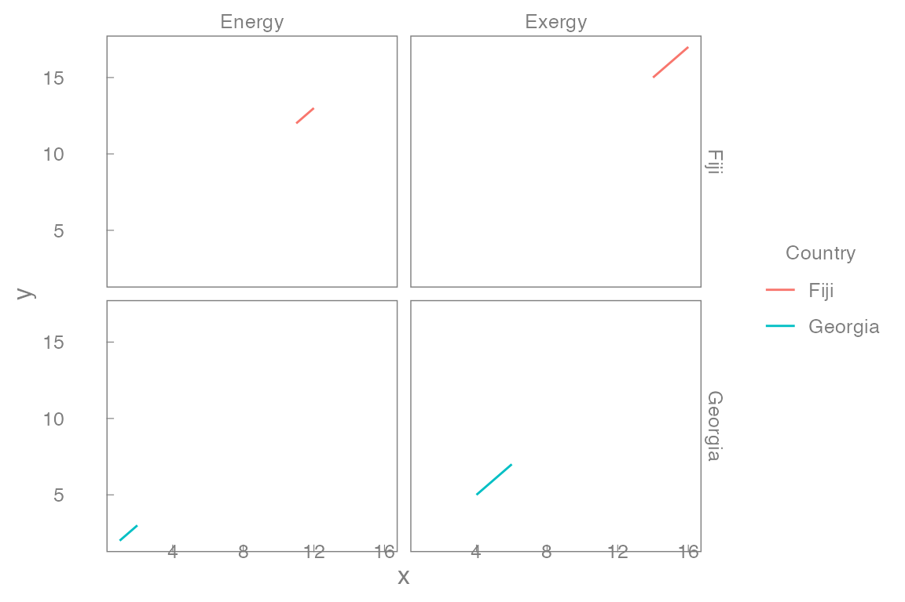
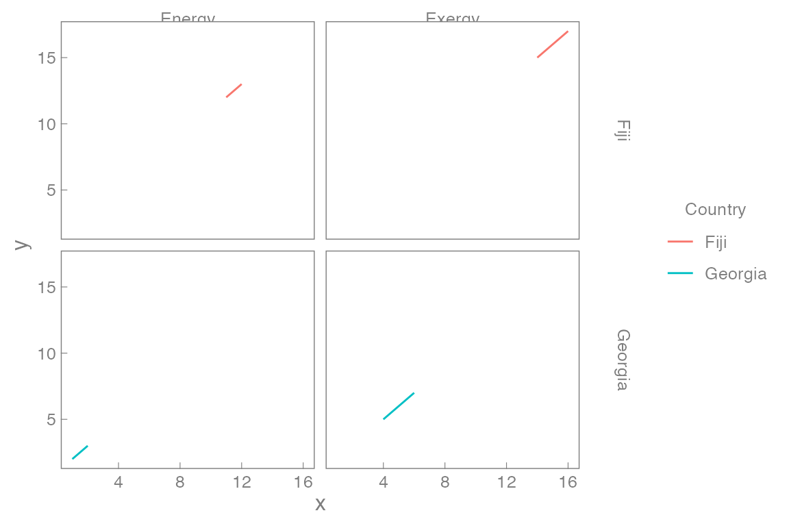
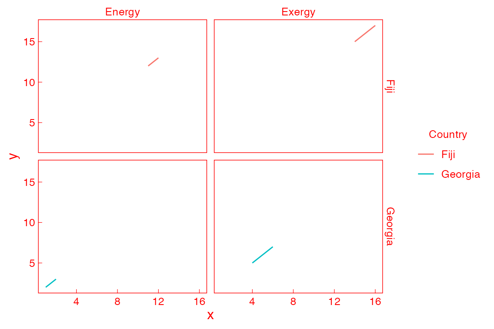

MKHthemes
MKHthemes.RmdIntroduction
ggplot2 is awesome! However, some of its defaults are …
undesirable and ugly. MKHthemes provides ways to improve on
its presentation of graphs. By default, it provides a more pleasant
version of graphs than ggplot2, and it includes a few
options to tweak graphs easily.
The package contains only one function,
MKHthemes::xy_theme(). By default,
MKHthemes::xy_theme() gives aesthetically pleasing graphs.
Arguments provide easy ways to adjust commonly needed but esoteric
settings that are hidden deep within ggplot2. The following
sections describe the function MKHthemes::xy_theme() and
its arguments.
Sample data
Here is a data frame of data we can use for the examples that follow.
df <- tibble::tribble(~x, ~y, ~EorX, ~Country,
1, 2, "Energy", "Georgia",
2, 3, "Energy", "Georgia",
4, 5, "Exergy", "Georgia",
6, 7, "Exergy", "Georgia",
11, 12, "Energy", "Fiji",
12, 13, "Energy", "Fiji",
14, 15, "Exergy", "Fiji",
16, 17, "Exergy", "Fiji")
df
#> # A tibble: 8 × 4
#> x y EorX Country
#> <dbl> <dbl> <chr> <chr>
#> 1 1 2 Energy Georgia
#> 2 2 3 Energy Georgia
#> 3 4 5 Exergy Georgia
#> 4 6 7 Exergy Georgia
#> 5 11 12 Energy Fiji
#> 6 12 13 Energy Fiji
#> 7 14 15 Exergy Fiji
#> 8 16 17 Exergy FijiA first example
The default settings for ggplot2 give the following
graph.
p <- df |>
ggplot2::ggplot(mapping = ggplot2::aes(x = x, y = y, colour = Country)) +
ggplot2::geom_line() +
ggplot2::facet_grid(rows = ggplot2::vars(Country),
cols = ggplot2::vars(EorX))
p
I find the figure to be quite ugly:
- Gray background? Really? Graphs should be made with the least amount of ink. (See Edward Tufte.) Too much ink spilt for the background.
- Dark gray background for the facet labels? Again, too much ink used for non-data elements.
- Tick marks outside of the plot? All elements of a graph should point toward the data, not away from it. Tick marks outside point away from the data. Tick marks inside point toward the data and are preferred.
- Grid lines?
They put the viewer in jail.
To improve the appearance of the graph, use
MKHthemes::xy_theme().
p + MKHthemes::xy_theme()By default, MKHthemes::xy_theme()
- eliminates the background colour to reduce the amount of ink in the plot,
- adds inward-pointing tick marks to point toward the data,
- provides a thin gray border around the graphs to frame the data,
- sets gray text for the border elements to push them to the visual background, and
- enables easy fine-tuning of many esoteric settings in the unlikely event that you disagree with any of the above.
Adjustments
MKHthemes::xy_theme() provides several arguments that
enable easy adjustments of graphical parameters, as shown in the
following examples.
# Change font size. Default is 12 points.
p + MKHthemes::xy_theme(font_size = 8)
# Change font family. Default is "", a sans-serif font.
p + MKHthemes::xy_theme(font_family = "Times New Roman")
# Change size of all non-axis-title fonts.
p + MKHthemes::xy_theme(font_size_scale = 0.4)
# Adjust tick length in points. Default is -0.3*font_size.
# Negative values are strongly recommended,
# because they point the ticks inward.
p + MKHthemes::xy_theme(tick_length = -7)
# Adjust spacing between axis values and the border in points.
# Defaults are 0.2*font_size.
p + MKHthemes::xy_theme(x_axis_labels_spacing = -5,
y_axis_labels_spacing = 20)
# Change facet label distance from the graph in points.
# Defaults are 0.2*font_size.
p + MKHthemes::xy_theme(x_strip_labels_spacing = -3,
y_strip_labels_spacing = 20)
# Change border and label colour. Default is "gray50".
p + MKHthemes::xy_theme(border_and_label_colour = "red")
MKHthemes and microtype
Note that xy_theme() scales fonts to arbitrary
precision. If you use MKHthemes with the knitr package and \(\LaTeX\), you may need to disable font
scaling by the microtype package to avoid errors. We have
found the following code helpful on Windows machines.
\usepackage{microtype}
\microtypesetup{expansion=false}